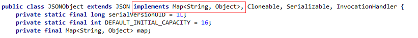

Fastjson 概要
Fastjson は Java ライブラリであり、Java オブジェクトを JSON 形式に変換できます。もちろん、JSON 文字列を Java オブジェクトに変換することもできます。
Fastjson は、ソースコードを持たない既存のオブジェクトであっても、あらゆる Java オブジェクトを操作できます。
Fastjson ソースコードアドレス：https://github.com/alibaba/fastjson
Fastjson 中国語 Wiki：https://github.com/alibaba/fastjson/wiki/Quick-Start-CN
Fastjson の特徴
- サーバー側と Android クライアント向けの2つの解析ツールを提供し、パフォーマンスが良好です。
- toJSONString() メソッドと parseObject() メソッドを提供し、Java オブジェクトと JSON を相互変換します。toJSONString() メソッドを呼び出すだけでオブジェクトを JSON 文字列に変換でき、parseObject() メソッドは逆に JSON 文字列をオブジェクトに変換します。
- 変更できない既存のオブジェクト（クラスのみでソースコードがない）の変換を許可します。
- Java ジェネリクスを幅広くサポートします。
- オブジェクトのカスタム表現を許可し、カスタムシリアライズクラスを許可します。
- 任意の複雑なオブジェクトをサポートします（深い継承階層と広く使用されるジェネリクスタイプを持ちます）。

ダウンロードと使用
Maven セントラルリポジトリから直接ダウンロードできます：
https://repo1.maven.org/maven2/com/alibaba/fastjson/
または Maven 依存関係を設定します:
<dependency>
<groupId>com.alibaba</groupId>
<artifactId>fastjson</artifactId>
<version>x.x.x</version>
</dependency>
ここでx.x.xはバージョン番号です。必要に応じて特定のバージョンを使用し、最新バージョンを推奨します。
JavaオブジェクトをJSON形式に変換する
次の Person JavaBean を定義します:
例
@JSONField(name = "AGE")
private int age;
@JSONField(name = "FULL NAME")
private String fullName;
@JSONField(name = "DATE OF BIRTH")
private Date dateOfBirth;
public Person(int age, String fullName, Date dateOfBirth) {
super();
this.age = age;
this.fullName= fullName;
this.dateOfBirth = dateOfBirth;
}
// 標準の getters & setters
}
JSON.toJSONString() を使用して、Java オブジェクトを JSON オブジェクトに変換できます：
@Before
public void setUp() {
listOfPersons.add(new Person(15, "John Doe", new Date()));
listOfPersons.add(new Person(20, "Janette Doe", new Date()));
}
@Test
public void whenJavaList_thanConvertToJsonCorrect() {
String jsonOutput= JSON.toJSONString(listOfPersons);
}
出力結果は次のとおりです：
[
{
"AGE":15,
"DATE OF BIRTH":1468962431394,
"FULL NAME":"John Doe"
},
{
"AGE":20,
"DATE OF BIRTH":1468962431394,
"FULL NAME":"Janette Doe"
}
]
出力をカスタマイズし、フィールドの並び順、日付表示形式、シリアライズマーカーなどを制御することもできます。
次に、Bean を更新していくつかのフィールドを追加します：
private int age;
@JSONField(name="LAST NAME", ordinal = 2)
private String lastName;
@JSONField(name="FIRST NAME", ordinal = 1)
private String firstName;
@JSONField(name="DATE OF BIRTH", format="dd/MM/yyyy", ordinal = 3)
private Date dateOfBirth;
上記のコードでは基本パラメータの種類を列挙し、@JSONField アノテーションを使用してカスタム変換を実現しています：
- format パラメータはフォーマットに使用されますdateプロパティ。
- デフォルトでは、FastJson ライブラリは Java Bean エンティティをシリアライズできますが、使用できるのはserialize フィールドをシリアライズしないように指定します。
- 使用ordinal パラメータでフィールドの順序を指定します
これにより、上記の出力結果は次のようになります：
[
{
"FIRST NAME":"Doe",
"LAST NAME":"Jhon",
"DATE OF BIRTH":"19/07/2016"
},
{
"FIRST NAME":"Doe",
"LAST NAME":"Janette",
"DATE OF BIRTH":"19/07/2016"
}
]
@JSONField
@JSONField の作用対象:
- 1. Field
- 2. Setter と Getter メソッド
注意：FastJson は操作時に getter と setter のメソッドに基づいて実行され、Field に基づくわけではありません。
注意：属性がプライベートの場合は、set メソッドが必要です。そうでないと逆シリアライズできません。
public @interface JSONField {
// シリアライズと逆シリアライズの順序を設定、1.1.42以降でサポート
int ordinal() default 0;
// フィールド名を指定
String name() default "";
// フィールドのフォーマットを指定、日付形式に有効
String format() default "";
// シリアライズするかどうか
boolean serialize() default true;
// 逆シリアライズするかどうか
boolean deserialize() default true;
}
2. JSONField の設定方法
FieldInfo は getter/setter メソッドまたはフィールドに設定できます。例：
2.1 getter/setter に設定する
private int id;
@JSONField(name="ID")
public int getId() {return id;}
@JSONField(name="ID")
public void setId(int value) {this.id = id;}
}
2.2 field に設定する
@JSONField(name="ID")
private int id;
public int getId() {return id;}
public void setId(int value) {this.id = id;}
}
3. format を使用して日付フォーマットを設定する
// dateのシリアライズと逆シリアライズでyyyyMMdd日付形式を使用するよう設定
@JSONField(format="yyyyMMdd")
public Date date;
}
4. serialize/deserialize を使用してフィールドをシリアライズしないように指定する
@JSONField(serialize=false)
public Date date;
}
public class A {
@JSONField(deserialize=false)
public Date date;
}
5. ordinal を使用してフィールドの順序を指定する
デフォルトでは、fastjson は java bean をシリアライズする際、fieldName のアルファベット順にシリアライズします。ordinal を使用してフィールドの順序を指定できます。この機能は 1.1.42 以降のバージョンが必要です。
@JSONField(ordinal = 3)
private int f0;
@JSONField(ordinal = 2)
private int f1;
@JSONField(ordinal = 1)
private int f2;
}
FastJson は BeanToArray シリアライズ機能もサポートしています：
String jsonOutput= JSON.toJSONString(listOfPersons, SerializerFeature.BeanToArray);
出力結果は次のとおりです：
[
[
15,
1469003271063,
"John Doe"
],
[
20,
1469003271063,
"Janette Doe"
]
]
JSONオブジェクトを作成する
JSONオブジェクトの作成は非常に簡単です。JSONObject（fastJson が提供する json オブジェクト）と JSONArray（fastJson が提供する json 配列オブジェクト）を使用するだけです。
JSONObject は Map<String,Object> と見なせます。ただし、JSONObject はオブジェクトのプロパティを操作するための、より豊富で便利なメソッドを提供します。ソースコードを見てみましょう。

同様に、JSONArray は List<Object> と見なせます。JSONArray は JSONObject オブジェクトの集合と見なせます。

さらに、JSONObject と JSONArray は JSON を継承しているため、両方を使用して JSON 形式の文字列と JSON オブジェクトおよび javaBean の間で変換することもできますが、混乱を避けるために JSON を使用します。
public void whenGenerateJson_thanGenerationCorrect() throws ParseException {
JSONArray jsonArray = new JSONArray();
for (int i = 0; i < 2; i++) {
JSONObject jsonObject = new JSONObject();
jsonObject.put("AGE", 10);
jsonObject.put("FULL NAME", "Doe " + i);
jsonObject.put("DATE OF BIRTH", "2016/12/12 12:12:12");
jsonArray.add(jsonObject);
}
String jsonOutput = jsonArray.toJSONString();
}
出力結果は次のとおりです：
[
{
"AGE":"10",
"DATE OF BIRTH":"2016/12/12 12:12:12",
"FULL NAME":"Doe 0"
},
{
"AGE":"10",
"DATE OF BIRTH":"2016/12/12 12:12:12",
"FULL NAME":"Doe 1"
}
]
JSON文字列をJavaオブジェクトに変換する
これまでに JSON オブジェクトの作成方法と、Java オブジェクトを JSON 文字列に変換する方法を学びました。次は JSON の解析方法を理解する必要があります：
public void whenJson_thanConvertToObjectCorrect() {
Person person = new Person(20, "John", "Doe", new Date());
String jsonObject = JSON.toJSONString(person);
Person newPerson = JSON.parseObject(jsonObject, Person.class);
assertEquals(newPerson.getAge(), 0); // シリアライズを false に設定した場合
assertEquals(newPerson.getFullName(), listOfPersons.get(0).getFullName());
}
JSON.parseObject() を使用して JSON 文字列を Java オブジェクトに変換できます。
逆シリアライズ時にオブジェクトへ変換する場合、デフォルトの引数なしコンストラクタが必要です。そうでないと例外が発生します:
com.alibaba.fastjson.JSONException: default constructor not found.
以下は簡単なサンプルテストです：
Person [age=20, fullName=John Doe, dateOfBirth=Wed Jul 20 08:51:12 WEST 2016]
@JSONField deserializeオプションで、フィールドを逆シリアライズしないように指定できます。
@JSONField(name = "DATE OF BIRTH", deserialize=false) private Date dateOfBirth;
出力結果は次のとおりです：
Person [age=20, fullName=John Doe, dateOfBirth=null]
ContextValueFilter を使用して JSON 変換を設定する
特定のシナリオでは、Value をフィルタリングする際に、所属する JavaBean の情報（型、フィールド、メソッドなど）を取得する必要があります。fastjson-1.2.9 では、以前のバージョンで提供された ValueFilter に似た ContextValueFilter が提供されていますが、BeanContext パラメータが追加で利用可能です。
public void givenContextFilter_whenJavaObject_thanJsonCorrect() {
ContextValueFilter valueFilter = new ContextValueFilter () {
public Object process(
BeanContext context, Object object, String name, Object value) {
if (name.equals("DATE OF BIRTH")) {
return "NOT TO DISCLOSE";
}
if (value.equals("John")) {
return ((String) value).toUpperCase();
} else {
return null;
}
}
};
String jsonOutput = JSON.toJSONString(listOfPersons, valueFilter);
}
上記の例では、DATE OF BIRTH フィールドを非表示にし、名前に John を含まないフィールドをフィルタリングしています：
[
{
"FULL NAME":"JOHN DOE",
"DATE OF BIRTH":"NOT TO DISCLOSE"
}
]NameFilter と SerializeConfig を使用する
NameFilter: シリアライズ時にキーを変更します。
SerializeConfig：内部は map コンテナであり、主な機能は各 Java 型に対応するシリアライズクラスを設定・記録することです。
public void givenSerializeConfig_whenJavaObject_thanJsonCorrect() {
NameFilter formatName = new NameFilter() {
public String process(Object object, String name, Object value) {
return name.toLowerCase().replace(" ", "_");
}
};
SerializeConfig.getGlobalInstance().addFilter(Person.class, formatName);
String jsonOutput =
JSON.toJSONStringWithDateFormat(listOfPersons, "yyyy-MM-dd");
}
例では、NameFilter 匿名クラスを使用してフィールド名を処理する formatName フィルタを宣言しています。新しく作成されたフィルタは Person クラスに関連付けられ、SerializeConfig クラスの静的プロパティであるグローバルインスタンスに追加されます。
これで、オブジェクトを JSON 形式に簡単に変換できます。
注意してください。使用しているのは toJSONString() ではなく toJSONStringWithDateFormat() です。これにより日付をより速くフォーマットできます。
出力結果：
[
{
"full_name":"John Doe",
"date_of_birth":"2016-07-21"
},
{
"full_name":"Janette Doe",
"date_of_birth":"2016-07-21"
}
]